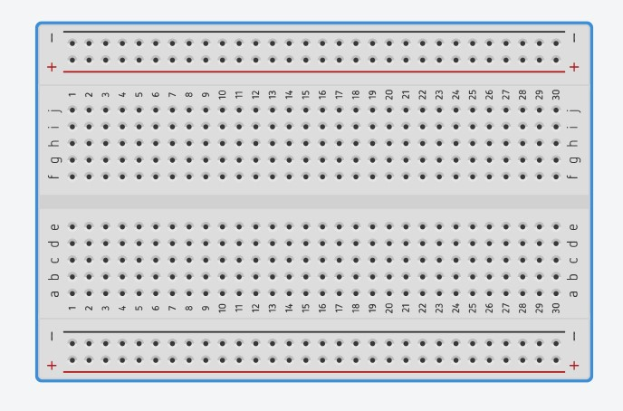
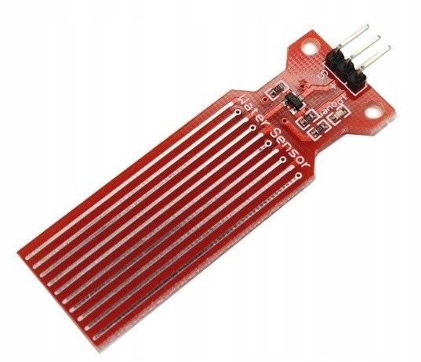
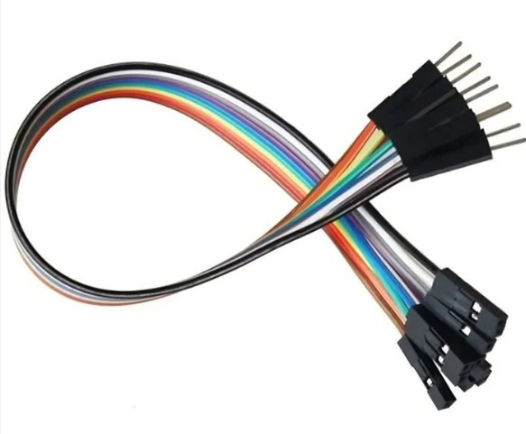
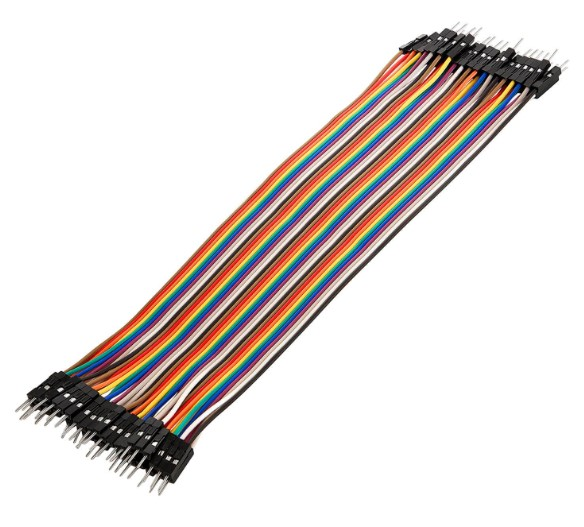
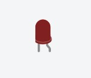
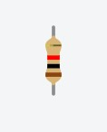
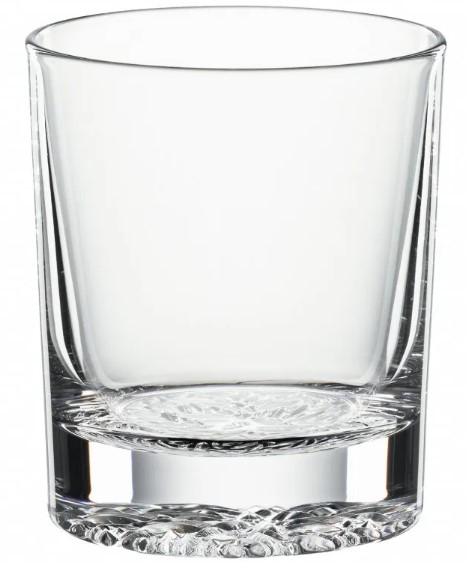

Mikrokrmilniška plošča, ki nadzira delovanje vodnega senzorja in omogoča programiranje
funkcionalnosti senzorja.
Vir: Tinkercad, 2024
Prototipska ploščica
Uporablja se kot platforma za povezovanje in organiziranje elektronskih komponent v vezju
vodnega senzorja.

Vir: Tinkercad, 2024
Vodni senzor
Skupaj z žensko-moško žico se povezuje na Arduino uno in se uporablja za zaznavanje prisotnosti
vode v določenem okolju. Njegov namen je prepoznati mokro stanje ter sprožiti
ustrezne ukrepe ali opozorila na podlagi teh informacij.

Vir: Tinkercad, 2024
Žica ženski-moški
Uporablja se za povezovanje Arduino Uno plošče s prototipsko ploščo ter drugih komponent
s prototipsko ploščo.

Vir: Argas, 2024
Žica moška
Uporablja se za povezovanje različnih komponent z uporom, LED diodo in vodnim senzorjem
med seboj in s prototipsko ploščo.

Vir: Az-delivery, 2024
LED dioda
Uporablja se kot indikator za stanje vode; na primer, lahko sveti, ko je voda zaznana.

Vir: Tinkercad, 2024
Upor
Uporablja se za omejevanje toka, ki gre skozi LED diodo, in za zaščito diode pred
prekomernim tokom.

Vir: Tinkercad, 2024
Lonček za vodo
V lončku se nahaja voda, ki jo vodni senzor zazna. Ta senzor deluje na osnovi spremembe
električne prevodnosti vode, zato je lonček za vodo ključen del sistema za testiranje
senzorja.

Vir: Kulina, 2024
USB kabel
Uporablja se za povezavo računalnika z Arduinom, s tem pa omogoča prenos programske kode iz računalnika v Arduino.